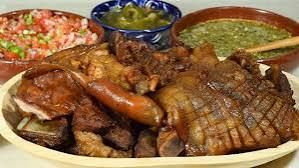

16.Michoacan

- Platillo: Carnitas michoacanas
- Ingredientes: Carne de cerdo, manteca, jugo de naranja, leche, ajo, laurel.
- Historia: Proceden de la tradición porcícola colonial, perfeccionadas por cocineros purépechas.
- Dato curioso: Se cocinan en cazo de cobre, lo que ayuda a que queden doradas por fuera y suaves por dentro.